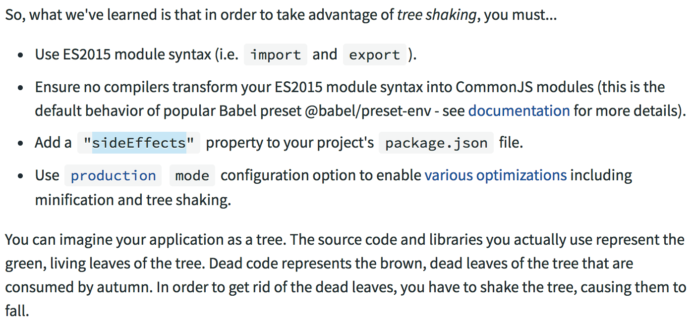

本文主要记录两点
如何在webpack中编译一个文件夹中的文件并且按照【原目录】输出。
总结在webpack 中使用 treeshaking 的条件。
webpack 编译文件目录并原样输出
场景是需要编译一个文件夹下的所有js文件，并且把这些js文件都按照【原来的目录结构】输出。
首先编译一个文件夹的所有js文件，比较好做。我们可以使用glob来获取目录下的所有js文件。1
2
3
4
5
6
7
8
9
10
11
12// Webpack babel transform config
module.exports = {
entry: glob.sync("./src/**/*.js"),
mode: "production",
output: {
filename: '[name].js',
path: path.resolve(__dirname, './')
},
// .....
}
但是如果我们像如上这么写，会直接输出一个 main.js 文件。也就是所有被编译的文件都会在同样的一个文件中输出。这不是我想要的，我想要的是【每个文件单独编译，并原样目录输出】。
查找了下 webpack 没有相关的配置, 如果我们要输出module/a/index.js在 dist/module/a/目录下。我们再写 entry 时就可以这么写:1
2
3
4
5
6
7
8entry: {
'module/a/index': 'module/a/index.js',
'module/b/index': 'module/b/index.js',
},
output: {
path: path.resolve(__dirname, 'dist'),
filename: '[name].js'
}
所以为了动态去输出到相应的目录，我们只需要去找到对应的entry即可。比如我们想要原样输出编译后的 src 目录下的文件, 先用 正则匹配到 对应的路径。然后再映射到entry上即可。主要是实现：./src/lib/a.js => ./lib/a.js的map。简单点的demo可能如下：1
2
3
4
5
6
7
8
9
10
11
12
13
14
15
16
17
18
19
20
21
22
23
24
25
26
27
28
29
30
31
32
33
34
35
36
37
38
39
40
41
42
43
44
45const glob = require('glob')
const path = require('path')
const webpack = require('webpack')
const CleanWebpackPlugin = require('clean-webpack-plugin')
// Get all file entries
function getEntries() {
let map = {}
const entryFiles = glob.sync("./src/**/*.js")
entryFiles.forEach(filepath => {
let fileDir = /.\/src\/(.*?)\.js/.exec(filepath)
map[fileDir[1]] = filepath
})
return map
}
// Webpack babel transform config
module.exports = {
entry: getEntries(),
mode: "production",
output: {
filename: '[name].js',
path: path.resolve(__dirname, './')
},
module: {
rules: [
{
test: /\.js/,
loader: 'babel-loader',
exclude: /node_modules/
}
]
},
plugins: [
new CleanWebpackPlugin(['lib']),
new webpack.DefinePlugin({ "process.env.NODE_ENV": JSON.stringify("production") })
]
}
webpack 的 treeshaking 条件
webpack2 的 treeshaking 一般我们经常会用到。最近有浏览了类似的文章，总结下（下面是使用webpack4的相关配置）：

也就是说必须得
使用 treeshake 减少文件体积的4个条件：
1 | - 使用 ES2015 模块语法（即 `import` 和 `export`）。 |
设置 module 为 false 的原因引用如下：
modules
"amd" | "umd" | "systemjs" | "commonjs" | "cjs" | "auto" | false, defaults to"auto".
Enable transformation of ES6 module syntax to another module type.
Setting this tofalsewill not transform modules.
错误示范：1
2
3
4
5
6
7
8
9
10
11
12exports.a = function() {
console.log('a')
}
exports.b = function() {
console.log('b')
}
import api from './a.js'
// 错误，需要用 import ,export ES6语法 才能 treeshake
api.a()
正确示范：1
2
3
4
5
6
7
8
9
10export function a() {
console.log('a')
}
export function b() {
console.log('b')
}
import {a} from './a.js'
a()
简单点的示例demo:
1 | // webpack.config.js |
sideEffects怎么理解？
sideEffects 这个估计再花一个文章也讲不完。大概的表达下是：
很多时候在转换代码后，我们的代码会由于被编译而产生副作用，比如你对一个函数使用了 location.href 或者 window 上加了东西，即使你没有真的使用这个模块，这个模块也会被打包进到dist里去。
所以如果你真的想去除那些完全没有被引用到的，即使有副作用的包：就应该把这些 包/模块 被标记为 sideEffects: false 了，那么不管它是否真的有副作用，只要它没有被引用到，整个 模块/包 都会被完整的移除。
举个我看到的很好的例子，例子原本出于文章# Webpack 中的 sideEffects 到底该怎么用？：1
2
3
4
5
6
7
8
9
10
11
12import DevTools from 'mobx-react-devtools';
class MyApp extends React.Component {
render() {
return (
<div>
...
{ process.env.NODE_ENV === 'production' ? null : <DevTools /> }
</div>
);
}
}
如果你不在webpack4中设置 sideEffects: false， 那么即使 NODE_ENV=production, mobx-react-devtools也会被引入。
所以如果我们能确定或者想让这个包不对包以外的对象造成影响，那么我们就完全的可以放心设置这个参数了。
sideEffects 不一定是 false, 比如对上面的 babel polly-fill 就可以使用 sideEffects: ["@babel/polly-fill"]，填入不需要 treeshaking 的即可。
再比如，`import ‘@babel/polly-fill’, 实际上你是没有导出任何模块的，如果你不加 sideEffect, webpack就会把整个模块去掉。
或者"sideEffects": ["*.css"]，我们不需要对css进行 treeshaking。
关于 副作用，推荐一篇文章你的Tree-Shaking并没什么卵用 , 也方便自己后续查阅。
总结
最近主要是想对组里的一些包做优化，做优化的过程中解决了一些问题，也带来了一些新的疑惑。疑惑还没解决，所以还不能总结成文章。虽然不是纠结上面的东西，但也算是纠结了好几天了。(ಥ _ ಥ)